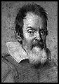
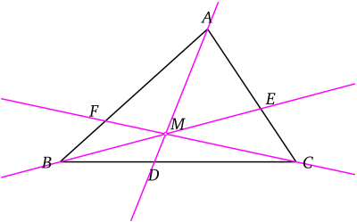
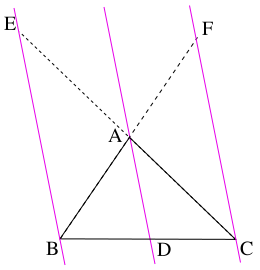

| Choisissez votre langue ! | Choose your language ! |
Théorème de Ceva
Ceva's theorem
Hommage à Giovanni Ceva
Giovanni Ceva (Milan 7 décembre 1647 – Mantoue 15 juin 1734) était un mathématicien italien. Il est réputé pour l'important théorème de géométrie du triangle qu'il a redécouvert et qui porte son nom : le théorème de Ceva. Son frère, Tommaso Ceva, était un poète et un mathématicien réputé.Tribute to Giovanni Ceva
Giovanni Ceva (Milan December 7, 1647 – Mantua June 15, 1734) was an Italian mathematician. He is renowned for the important geometry theorem of the triangle which he rediscovered and which bears his name: Ceva's theorem. His brother, Tommaso Ceva, was a renowned poet and mathematician.
Cependant, il était déjà connu, à la fin du XIe siècle, de Yusuf Al-Mu'taman ibn Hűd, géomètre et roi de Saragosse. Celui-ci le démontre dans son Livre de perfection (Kitab al-Istikmal), célèbre en son temps mais dont le texte n'a été redécouvert qu'en 1995.
Le théorème de Ceva
However, it was already known, at the end of the 11th century, to Yusuf Al-Mu'taman ibn Hűd, surveyor and king of Zaragoza. This one demonstrates it in his Book of Perfection (Kitab al-Istikmal), famous in its time but whose text was not rediscovered until 1995.
Ceva's theorem
Les droites (AD), (BE) et (CF) sont concourantes ou parallèles si et seulement si
\( \displaystyle \frac{\overline{DB}}{\overline{DC}} \times \frac{\overline{EC}}{\overline{EA}} \times \frac{\overline{FA}}{\overline{FB}} = - 1 \)
The lines (AD), (BE) and (CF) are concurrent or parallel if and only if
\( \displaystyle \frac{\overline{DB}}{\overline{DC}} \times \frac{\overline{EC}}{\overline{EA}} \times \frac{\overline{FA}}{\overline {FB}} = - 1 \)

Image: http://fr.wikipedia.org/wiki/Théorème_de_Ceva
démonstration
Il existe de nombreuses manières de démontrer le théorème de Ceva.Une des plus simples consiste à faire appel à la
- Si M est barycentre de {(A,α),(B,β)} distinct de A et B alors \( \displaystyle \frac{\overline{MB}}{\overline{MA}} = - \frac{\alpha}{\beta} \)
- Si M est barycentre de (A,α),(B,β),(C,γ)} non situé sur un côté du triangle ABC, (AM) rencontre (BC) en D si et seulement si \( \displaystyle \frac{\overline{DB}}{\overline{DC}} = - \frac{\gamma}{\beta} \) à cause du théorème d'associativité des barycentres.
Démonstration directe
Cas du parallélisme
L'application du théorème de Thalès d'une part dans le triangle (CBE), avec (DA) parallèle à (BE), d'autre part dans le triangle (BCF), avec (DA) parallèle à (CF) conduit à dire que :
\( \displaystyle \frac{\overline{EC}}{\overline{EA}} = \frac{\overline{BC}}{\overline{BD}} \) et \( \displaystyle \frac{\overline{FA}}{\overline{FB}} = \frac{\overline{CD}}{\overline{CB}} \)
Par produit terme à terme de ces deux égalités on obtient le théorème.
Cas des droites concourantes
Comme nous l'avons remarqué plus haut nous avons :\( \displaystyle \frac{\overline{DB}}{\overline{DC}} = - \frac{\gamma}{\beta} \)
Mais pour les mêmes raisons :\( \displaystyle \frac{\overline{EC}}{\overline{EA}} = - \frac{\alpha}{\gamma} \) et \( \displaystyle \frac{\overline{FA}}{\overline{FB}} = - \frac{\beta}{\alpha} \)
Le théorème s'obtient donc par produit terme à terme des 3 égalités.
Réciproque
Si les trois droites sont parallèles, il n'y a rien à démontrer.Dans le cas contraire, deux au moins sont sécantes, on peut sans perdre de généralité, supposer que ce sont les droites (AD) et (BE) sécantes en M non situé sur [AB], [BC] ou [CA] et barycentre de (A,α),(B,β),(C,γ)}.
Comme (AM) rencontre (BC) en D et que (BM) rencontre (CA) en E, on peut écrire : \( \displaystyle \frac{\overline{DB}}{\overline{DC}} = - \frac{\gamma}{\beta} \) et \( \displaystyle \frac{\overline{EC}}{\overline{EA}} = - \frac{\alpha}{\gamma} \) On a donc par produit :
\( \displaystyle \frac{\overline{DB}}{\overline{DC}} \times \frac{\overline{EC}}{\overline{EA}} = \frac{\alpha}{\beta} \)
et puisque \( \displaystyle \frac{\overline{DB}}{\overline{DC}} \times \frac{\overline{EC}}{\overline{EA}} \times \frac{\overline{FA}}{\overline{FB}} = - 1 \) Il vient :\( \displaystyle \frac{\overline{FA}}{\overline{FB}} = - \frac{\beta}{\alpha} \)
ce qui assure que la droite (CM) coupe bien la droite (AB) en F.Les trois droites sont bien concourantes en M.
proof
There are many ways to prove Ceva's theorem.One of the simplest is to use the
- If M is the barycenter of {(A,α),(B,β)} distinct from A and B then \( \displaystyle \frac{\overline{MB}}{\overline{MA}} = - \frac{\alpha}{\beta} \)
- If M is the barycenter of (A,α),(B,β),(C,γ)} not located on a side of triangle ABC, (AM) meets (BC) in D if and only if \( \displaystyle \frac{\overline{DB}}{\overline{DC}} = - \frac{\gamma}{\beta} \) because of the associativity theorem of barycenters.
Direct demonstration
Case of parallelism
The application of Thales' theorem on the one hand in the triangle (CBE), with (DA) parallel to (BE), on the other hand in the triangle (BCF), with (DA) parallel to (CF) leads to say that:
\( \displaystyle \frac{\overline{EC}}{\overline{EA}} = \frac{\overline{BC}}{\overline{BD}} \) and \( \displaystyle \frac{\overline{FA}}{\overline{FB}} = \frac{\overline{CD}}{\overline{CB}} \)
By product term by term of these two equalities we obtain the theorem.
Case of concurrent lines
As we noticed above we have:\( \displaystyle \frac{\overline{DB}}{\overline{DC}} = - \frac{\gamma}{\beta} \)
But for the same reasons:\( \displaystyle \frac{\overline{EC}}{\overline{EA}} = - \frac{\alpha}{\gamma} \) and \( \displaystyle \frac{\overline{FA}}{\overline{FB}} = - \frac{\beta}{\alpha} \)
The theorem is therefore obtained by the term-by-term product of the 3 equalities.
Reciprocal
If the three lines are parallel, there is nothing to prove.Otherwise, at least two are secant, without losing generality, we can assume that these are the lines (AD) and (BE) secant in M not located on [AB], [BC] or [CA] and barycenter of (A,α),(B,β),(C,γ)}.
As (AM) meets (BC) in D and (BM) meets (CA) in E, we can write: \( \displaystyle \frac{\overline{DB}}{\overline{DC}} = - \frac{\gamma}{\beta} \) and \( \displaystyle \frac{\overline{EC}}{\overline{EA}} = - \frac{\alpha}{\gamma} \) We therefore have by product:
\( \displaystyle \frac{\overline{DB}}{\overline{DC}} \times \frac{\overline{EC}}{\overline{EA}} = \frac{\alpha}{\beta} \)
and since \( \displaystyle \frac{\overline{DB}}{\overline{DC}} \times \frac{\overline{EC}}{\overline{EA}} \times \frac{\overline{FA}}{\overline {FB}} = - 1 \) It comes :\( \displaystyle \frac{\overline{FA}}{\overline{FB}} = - \frac{\beta}{\alpha} \)
which ensures that the straight line (CM) intersects the straight line (AB) at F.The three straight lines are indeed concurrent in M.
Vérification expérimentale du théorème de Ceva
Voici une appliquette qui vous permet de faire varier les 6 points A,B,C,D,E,F :Le point D sur la droite (BC)
Le point E sur la droite (AC)
Le point F sur la droite (AB)
A chaque fois le rapport \( \displaystyle m=\frac{\overline{DB}}{\overline{DC}} \times \frac{\overline{EC}}{\overline{EA}} \times \frac{\overline{FA}}{\overline{FB}} \) est calculé et affiché en haut à droite.
Le point de concours unique est difficile à obtenir mais, pour raison de continuité, plus les trois droites (AD),(BE) et (CF) semblent concourantes et plus la valeur affichée doit être voisine de -1.
Experimental verification of Ceva's theorem
Here is an applet that allows you to vary the 6 points A,B,C,D,E,F:Point D on the line (BC)
Point E on the line (AC)
Point F on the line (AB)
Each time the report \( \displaystyle m=\frac{\overline{DB}}{\overline{DC}} \times \frac{\overline{EC}}{\overline{EA}} \times \frac{\overline{FA}}{ \overline{FB}} \) is calculated and displayed at the top right.
The single intersection point is difficult to obtain but, for reasons of continuity, the more the three straight lines (AD), (BE) and (CF) appear concurrent, the more the displayed value must be close to -1.
Notion de dualité
Les théorèmes de Ménélaüs et de Ceva sont dits duaux. L'un peut se déduire de l'autre et vice-versa dès qu'on dispose d'applications du plan dans lui-même transformant les points en droites et réciproquement. L'image de trois points alignés devient alors trois droites concourantes et réciproquement. De telles applications existent et nous en verrons plus tard des exemples.Notion of duality
The theorems of Menelaus and Ceva are said to be dual. One can be deduced from the other and vice versa as soon as we have applications of the plane in itself transforming the points into straight lines and vice versa. The image of three aligned points then becomes three concurrent lines and vice versa. Such applications exist and we will see examples of them later.|
Création Gilles Dubois - licence CC-BY-SA
Created by Gilles Dubois - licence CC-BY-SA
|
Septembre 2023
September 2023
|
Version mobile Jquery
Mobile Jquery version
|
|